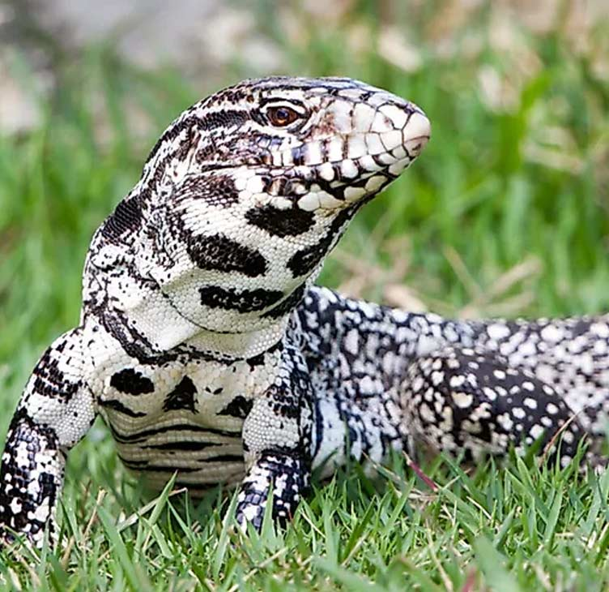

🦎 Black and White Tegu (Salvator merianae) — The Giant Gentle Lizard
Massive, intelligent, and surprisingly docile — the ultimate big lizard for serious reptile keepers.
🧠 Smart Facts — At a Glance
| Trait | Details |
|---|---|
| Common Name | Black and White Tegu |
| Scientific Name | Salvator merianae |
| Size | 100–140 cm (3.5–4.5 ft), some males reach 5 ft |
| Vivarium Size | Minimum: 8x4x4 ft • Larger free-roam options ideal |
| Lifespan | 15–20+ years with proper care |
| Temperament | Highly intelligent, can be very tame with handling |
| Diet | Omnivorous — meats, insects, fruit, eggs |
| Humidity | 60–80% |
| Temperature | Basking: 45°C • Ambient: 27–32°C |
| UVB Lighting | Strong UVB required (Arcadia 12%+ or Ferguson Zone 3–4) |
| Price (UK) | £250 – £500 (CB juveniles) • Rare morphs or adults can exceed £800 |
🌍 Overview
The Black and White Tegu is a powerhouse of the lizard world. Native to South America, particularly Argentina, Paraguay, and Brazil, this species has become popular for its tameable nature, trainable intelligence, and impressive size.
They can be walked on a harness, come when called, and even learn routines. But they also require substantial commitment — both in space and care.
🏡 Vivarium Setup
This is not a species that does well in small enclosures. The bare minimum for adults is 8x4x4 ft, but many keepers opt for custom-built or room-sized enclosures. Outdoor summer pens are popular in warmer regions.
✅ Minimum enclosure for an adult:
- 8 ft wide x 4 ft deep x 4 ft tall
- Ground-dwelling but loves to burrow and explore
🔧 Key Components:
- Deep substrate for digging (6–12" minimum)
- Logs and hide boxes
- Large water dish (big enough to soak in)
- Strong, escape-proof build (they’re powerful!)
- Lockable doors — adults are clever and strong
🌡️ Heat & Lighting
| Element | Requirement |
|---|---|
| Basking spot | 45°C (with ceramic, halogen, or MVB) |
| Ambient temp | 27–32°C |
| Night temp | Can drop to 22–24°C safely |
| UVB | High-output linear (Arcadia T5, ZooMed ReptiSun) |
Provide at least 12 hours of light per day. Use a combination of UVB and heat sources to maintain gradient zones.
💧 Humidity & Hydration
Black and White Tegus come from seasonally humid climates, so aim for:
- 60–80% relative humidity
- Mist enclosure daily or use a fogger
- Deep damp hide for shedding support
- A large water basin for soaking
🍽️ Diet
Tegus are true omnivores. Their diet should evolve as they grow:
- Juveniles: More protein (bugs, pinkies, turkey mince)
- Adults: Mix of lean meats, eggs, insects, and fruits
✅ Weekly Feeding Example:
| Day | Food |
|---|---|
| Mon | Dubia roaches, mealworms, crickets |
| Tue | Ground turkey with calcium dust |
| Wed | Eggs (boiled or scrambled, no milk), grapes, banana |
| Thu | Quail chicks or mice |
| Fri | Mixed fruit and veg (fig, papaya, mango, sweet potato) |
| Sat | Chicken hearts or gizzards |
| Sun | Fast or light snack only (e.g. berries) |
Supplements:
Calcium + D3: 2–3x per week
Multivitamin: 1x per week
🧠 Temperament & Handling
Tegus are arguably the tamest of the large lizards. With regular handling, they can bond with their keeper, enjoy interaction, and become quite relaxed — even laying in your lap.
| Trait | Notes |
|---|---|
| Taming | Best started young; very receptive to routine |
| Handling | Regular interaction essential for socialisation |
| Bites? | Unlikely unless provoked — most become very calm |
| Hibernation? | Yes — they brumate for 2–4 months (UK setups can skip) |
💷 Buying Guide
| Type | UK Price Range |
|---|---|
| CB Juvenile | £250–£500 |
| CB Adult | £500–£800+ |
| Albino/Blue Morph | £800–£1,500+ |
Always confirm:
- Captive bred only
- Good weight and temperament
- No stuck shed, mouth rot, or parasites
- Feeding history and morph clarity
🧪 Ideal for…?
✅ Advanced keepers with space and time
✅ Those seeking a dog-like reptile
❌ Not suitable for small homes, minimal budgets, or short-term interest
🔗 Related Tools from ReptiCareAI
💬 Final Thoughts
The Black and White Tegu is the reptile world’s gentle giant. It’s interactive, inquisitive, and full of personality — but it also demands respect. With decades-long lifespans, huge enclosures, and complex diets, this is a serious commitment. For those willing to go all-in, it’s one of the most rewarding reptiles you can own.